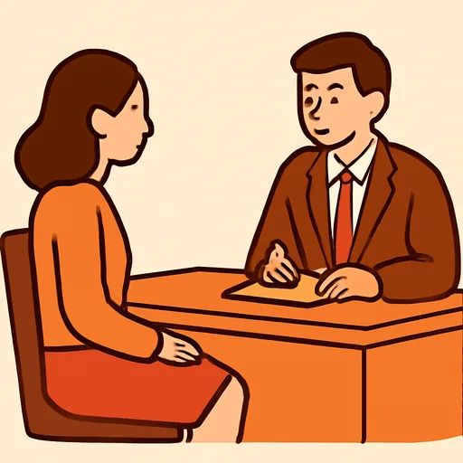

Semana 10 · Día 5 — Un día normal: entrevista y texto
Неделя 10 · День 5 — Обычный день: интервью и текст
Сегодня вы научитесь
- задавать восемь вопросов о чужом дне и записывать ответы;
- превращать интервью в связный текст — то есть переводить ответы из «ты» в «он / она»;
- писать текст «Un día normal» на сто слов: первая большая письменная работа курса.
1. Разминка (0–3 мин)
- Карточки: 10 слов недели (глаголы — с двумя формами, наречия частоты).
- Вопрос вслух: ¿Qué haces los domingos? Ответьте тремя фразами.
Карточки
Скажите перевод вслух — и переверните.
2. Фонетика (3–6 мин)
Вопрос поднимается, ответ опускается. В русском вопрос без вопросительного слова тоже идёт вверх, но потом голос резко падает; в испанском подъём держится до самого конца фразы. Прочитайте вслух каждую пару — вверх, потом вниз:
¿Te levantas temprano? ↗ — Sí, a las siete. ↘ ¿Comes en casa? ↗ — No, en la oficina. ↘ ¿Duermes ocho horas? ↗ — Casi nunca. ↘ ¿Sales con amigos? ↗ — Los viernes. ↘
А теперь кусок интервью: вопрос — ответ, вопрос — ответ. Послушайте (или прочитайте вслух за двоих и запишите себя) и ответьте на два вопроса.
[AUDIO]— ¿A qué hora te levantas? — A las siete menos cuarto. Me ducho, desayuno y salgo de casa a las ocho. — ¿Dónde comes? — Entre semana como en la oficina, a las dos. Los fines de semana, en casa de mis padres. — ¿Y qué haces por la tarde? — Vuelvo a las siete y media, hago la cena y veo la tele un rato. Tres veces a la semana voy al gimnasio, pero no siempre puedo.
- ¿A qué hora se levanta y a qué hora sale de casa?
- ¿Con qué frecuencia va al gimnasio?
3. Новое (6–16 мин)
Пример
Ольга берёт у Хавьера интервью: на курсах задали написать текст о чужом дне.
[AUDIO]
| Español | Русский |
|---|---|
| Olga: Javier, son ocho preguntas. ¿A qué hora te levantas? | Хавьер, тут восемь вопросов. Во сколько ты встаёшь? |
| Javier: A las siete. Me ducho y desayuno en diez minutos. | В семь. Душ и завтрак — за десять минут. |
| Olga: ¿Qué desayunas? | Что ты ешь на завтрак? |
| Javier: Café con leche y una tostada. Siempre lo mismo. | Кофе с молоком и тост. Всегда одно и то же. |
| Olga: ¿A qué hora empiezas a trabajar? | Во сколько начинаешь работать? |
| Javier: A las nueve. Salgo de casa a las ocho y media. | В девять. Выхожу из дома в полдевятого. |
| Olga: ¿Dónde comes? | Где ты обедаешь? |
| Javier: En la oficina, a las dos. Los viernes salimos a un bar. | В офисе, в два. По пятницам ходим в бар. |
| Olga: ¿Qué haces por la tarde? | Что ты делаешь вечером? |
| Javier: Vuelvo a las siete y media, hago la cena y pongo la mesa. | Возвращаюсь в полвосьмого, готовлю ужин и накрываю на стол. |
| Olga: ¿Con qué frecuencia haces deporte? | Как часто ты занимаешься спортом? |
| Javier: Casi nunca entre semana. Los sábados juego al fútbol. | В будни почти никогда. По субботам играю в футбол. |
| Olga: ¿A qué hora te acuestas? | Во сколько ложишься? |
| Javier: A las doce. Duermo siete horas. | В двенадцать. Сплю семь часов. |
| Olga: Y la última: ¿qué haces los fines de semana? | И последний: что ты делаешь по выходным? |
| Javier: Duermo hasta tarde, hago la compra y quedo con amigos. | Сплю до позднего утра, покупаю продукты и встречаюсь с друзьями. |
Объяснение
Восемь вопросов, которые покрывают весь день. Это готовая анкета: выучите её, и вы сможете поговорить о распорядке с любым человеком.
| № | Pregunta | О чём |
|---|---|---|
| 1 | ¿A qué hora te levantas? | начало дня |
| 2 | ¿Qué desayunas? | завтрак |
| 3 | ¿A qué hora empiezas a trabajar / a estudiar? | работа или учёба |
| 4 | ¿Dónde comes? | обед |
| 5 | ¿Qué haces por la tarde? | вечер |
| 6 | ¿Con qué frecuencia haces deporte? | частота |
| 7 | ¿A qué hora te acuestas? | конец дня |
| 8 | ¿Qué haces los fines de semana? | выходные |
А теперь главное на сегодня: как из интервью получается текст. Вы спрашивали на «ты» (te levantas), а писать будете о человеке — в третьем лице (se levanta). Меняются две вещи, и вторую забывают почти все:
| В интервью (tú) | В тексте (él / ella) | Что изменилось |
|---|---|---|
| ¿A qué hora te levantas? | Javier se levanta a las siete. | и местоимение, и глагол |
| ¿Qué desayunas? | Desayuna café con leche. | только глагол |
| ¿Empiezas a las nueve? | Empieza a las nueve. | только глагол |
| ¿Haces deporte? | Hace deporte los sábados. | только глагол |
| ¿A qué hora te acuestas? | Se acuesta a las doce. | и местоимение, и глагол |
| ¿Quedas con amigos? | Queda con amigos. | только глагол |
Правило: возвратные глаголы меняют МЕСТОИМЕНИЕ тоже. me → se, te → se. В третьем лице все возвратные глаголы берут se, и в единственном, и во множественном: se levanta, se levantan, se acuesta, se acuestan.
И текст-образец — сто слов, которые вы сегодня напишете сами:
Un día normal (Javier, Sevilla / Madrid)
Javier se levanta a las siete. Se ducha y desayuna café con leche y una tostada: siempre lo mismo. Sale de casa a las ocho y media y empieza a trabajar a las nueve. Come en la oficina, a las dos, pero los viernes sale a un bar con sus compañeros. Por la tarde vuelve a casa a las siete y media, hace la cena y pone la mesa. Después ve la tele un rato. Entre semana casi nunca hace deporte, pero los sábados juega al fútbol. Se acuesta a las doce y duerme siete horas. Los fines de semana duerme hasta tarde, hace la compra y queda con amigos.
В образце 110 слов — «сто» значит «около ста», считать до единицы не надо. Посчитайте другое: это ровно те восемь ответов, расставленные по порядку дня и склеенные тремя вещами, которые вы уже знаете: соединителями (primero, luego, después, por la tarde), наречиями частоты (siempre, casi nunca) и союзами y / pero. Никакой новой грамматики — только порядок.
⚠️ Контраст с русским
- В русском, пересказывая чужой ответ, вы меняете глагол — и этого достаточно: «я встаю» → «он встаёт», «я ем» → «он ест». У возвратных «-ся» никуда не уезжает: оно приклеено к глаголу навсегда, «я умываюсь» → «он умывается».
- В испанском возвратное местоимение — отдельное слово, и его надо менять отдельно: me levanto → se levanta, te acuestas → se acuesta. Два движения вместо одного, и второе легко пропустить, потому что по-русски его делать не надо.
- Вы захотите сказать: ✗ Javier levanta a las siete. (выбросили местоимение) ✗ Javier te levanta a las siete. (оставили «ты») → Правильно: ✅ Javier se levanta a las siete.
И это не придирка к форме, а разница в смысле. Levantar без местоимения значит «поднимать что-то»: фраза ✗ Javier levanta a las siete понимается как «Хавьер поднимает в семь — кого-то или что-то». Слушатель будет ждать продолжения. А se levanta — «встаёт сам». Ровно так же, как по-русски «поднимать» и «подниматься» — разные вещи; просто в испанском этот кусочек стоит слева и отдельным словом.
4. Практика (16–26 мин)
Упражнение А. Переведите вопрос интервью в третье лицо.
Модель: ¿A qué hora te levantas? → ¿A qué hora se levanta Javier? / Javier se levanta a las siete.
- ¿Qué desayunas? → Javier café con leche.
- ¿A qué hora te duchas? → Javier a las siete.
- ¿Dónde comes? → Javier en la oficina.
- ¿A qué hora vuelves a casa? → Javier a las siete y media.
- ¿Haces la cena? → Javier la cena.
- ¿A qué hora te acuestas? → Javier a las doce.
- ¿Juegas al fútbol? → Javier al fútbol los sábados.
- ¿Te quedas en casa los domingos? → Javier en casa los domingos.
- ¿Puedes dormir la siesta? → Javier no dormir la siesta.
- ¿Sales con amigos? → Javier con amigos los viernes.
Упражнение Б. Дополните текст. Банк слов (все формы — третье лицо):
se levanta · se ducha · desayuna · sale · empieza · come · vuelve · hace · se acuesta · duerme
Un día normal (Olga, Moscú / Madrid)
Olga a las siete menos cuarto. , un té con limón y de casa a las ocho. a trabajar a las nueve y en la cafetería de la oficina, a las dos y media. Por la tarde a casa a las seis y, dos veces a la semana, deporte en el gimnasio. a las once y ocho horas: dice que sin ocho horas no puede trabajar.
Упражнение В. Исправьте ошибки. В каждой фразе одна ошибка.
Модель: Javier levanta se levanta a las siete.
- Olga te levanta a las siete menos cuarto.
- Javier acuesta a las doce.
- Olga se duchas y desayuna un té.
- Javier me queda en casa los domingos.
- Olga y Javier se levanta a la misma hora.
- Javier empiezamos a trabajar a las nueve.
5. Выход (26–29 мин)
Напишите «Un día normal» и запишите интервью.
1. Интервью (запись голосом). Задайте вслух все восемь вопросов и ответьте на них за себя — вопрос, пауза, ответ. Запишите на телефон: это ваш первый диалог на минуту с лишним. Следите за интонацией из задания 2 (вопрос вверх, ответ вниз) и за -s в te levantas, desayunas, comes.
2. Текст (сто слов). Напишите текст «Un día normal» о себе, от первого лица, по образцу из объяснения: сто слов, восемь ответов по порядку дня, склеенных соединителями (primero, luego, después, por la tarde, por la noche), наречиями частоты и союзами y / pero. Минимум три указания времени и два наречия частоты.
Если пишете не о себе, а о Хавьере или об Ольге, — всё то же самое, но в третьем лице, и тогда проверьте каждое se.
6. Итог (29–30 мин)
- [ ] Я задаю восемь вопросов о чужом дне и записываю ответы.
- [ ] Я перевожу ответ из «ты» в «он / она», не забывая про se.
- [ ] Я написал(а) текст «Un día normal» на сто слов.
- Добавьте слова дня в колоду. Завтра — тест по всей пятой единице.
Словарь дня
| Español | Русский | Пример |
|---|---|---|
 la entrevista |
интервью | Son ocho preguntas: es una entrevista. |
| la pregunta | вопрос | La última pregunta es sobre el fin de semana. |
| la respuesta | ответ | Escribo las respuestas de Javier. |
| contestar | отвечать | Javier contesta a las ocho preguntas. |
| un día normal | обычный день | Escribo un texto: «Un día normal». |
| todo el día | весь день | Los domingos descanso todo el día. |
| por eso | поэтому | Vuelve tarde; por eso cena a las diez. |
Ответы
Аудирование. 1. Se levanta a las siete menos cuarto y sale de casa a las ocho. · 2. Tres veces a la semana (pero no siempre puede).
А. 1. desayuna · 2. se ducha · 3. come · 4. vuelve · 5. hace · 6. se acuesta · 7. juega · 8. se queda · 9. puede · 10. sale.
Три формы с se — это 2, 6 и 8: ducharse, acostarse, quedarse. Остальные семь глаголов не возвратные, и местоимение им не нужно.
Б. se levanta · Se ducha · desayuna · sale · Empieza · come · vuelve · hace · Se acuesta · duerme.
В. 1. Olga se levanta (а не te: это третье лицо) · 2. Javier se acuesta (без местоимения acuesta значит «укладывает кого-то») · 3. Olga se ducha (третье лицо, не duchas) · 4. Javier se queda (а не me; и заметьте: queda без местоимения значило бы «договаривается о встрече») · 5. Olga y Javier se levantan (двое — множественное число; местоимение se в третьем лице одно и то же и в единственном, и во множественном) · 6. Javier empieza a trabajar (один человек, не nosotros; и дифтонг здесь на месте, потому что ударение на корне).
Слова сегодняшнего урока
Пять слов из словаря этого урока. Ответы не сохраняются и ни на что не влияют.